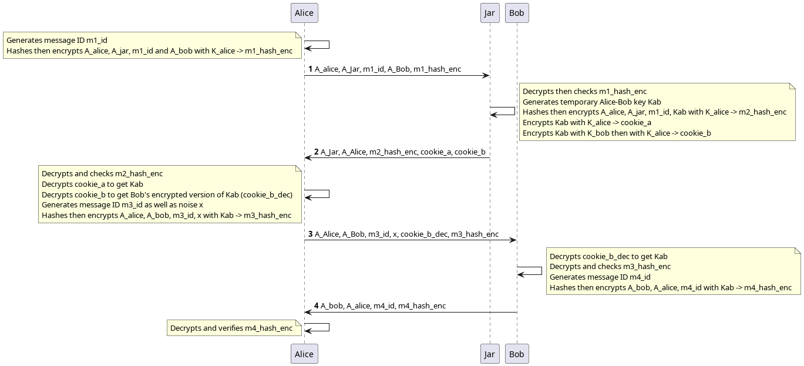

Breaking grandpa: A look at RFC 1004
RFC 1004
I recently decided to take some time exploring old RFCs in search of little known protocols. RFC 1004 describes an old protocol that is absolutely little known and little used and for good reasons. It is a distributed authentication protocol from 1987 that explicitely aims at protecting the authenticity of the exchange only ("Is that message really from who I think it is, unmodified?") and doesn't care about its confidentiality.
By modern standards I can think of no reason to ever consider using this protocol. Like Kerberos, it relies heavily on pre-shared keys between participants and a trusted reference server: the "Cookie Jar". It also relies on decryption of hashes as proof of authenticity. If you consider this protocol, you should probably just be using Kerberos.
Here is an outline of the protocol where Alice attempts to authenticate with Bob:
As we can see each message contains an encrypted hash that englobes the parameters of the message. The security of this message-authentication code relies on the idea that only someone with the correct secret key can properly create then encrypt the message hash. There are also nonces to avoid replay attacks.
Furthermore we see that there are two phases: first Alice exchanges with Jar, then Alice exchanges with Bob. Jar never talks to Bob and Bob's first discovers Alice's authentication attempt when presented with an encrypted temporary key.
In this article we'll show a non-trivial attack against this protocol found using Verifpal.
Verifpal
Verifypal is a cryptographic protocol formal analyzer designed to be more user-friendly than similar tools. Its goal is to bring formal verification to regular developpers and engineers in order to quickly test and discard prototype ideas. If there's one thing I hope people get out of that article it's that Verifpal is very much worth trying if you're developing any kind of secure data exchange and aren't a cryptographer.
The way Verifpal works is by creating a model of the protocol. There are 4 kinds of statements:
attacker: which can be passive (just listens) or active (actively intercepts, replays or modifies messages, possibly over several sessions).
principal: an actor in the protocol, and its actions.
messages: what is sent, from whom, to who, symbolized by an arrow.
queries the questions we want to ask about the protocol we just described.
One thing that is important to note is that Verifpal analyzes the protocol, not the implementation. So it doesn't care what specific encryption function you use: if you want symmetric encryption without authentication that is modeled with the function ENC which describes a perfect encryption with these characteristics.
Another thing you'll note if you compare the RFC description with the Verifpal model is that we send less things than specified in the protocol. That's because Verifpal doesn't like principals receiving already known values: if it's a public value and hasn't been hashed or encrypted or modified in any way then it's useless to send it as it is already known. Obviously the implementation might disagree with that, but from a protocol analyzer which cares mainly about what information you can get access to, this is not important.
And without further suspense, here is the model for RFC 1004:
// Filename: rfc1004.vp
attacker[active]
principal Alice[
knows public A_alice // Alices's address
knows private K_alice // Alices's secret key shared with Jar
]
principal Bob[
knows public A_bob
knows private K_bob
]
principal Jar[
knows public A_jar
knows private K_alice
knows private K_bob
]
principal Alice[
generates m1_id
m1_hash = HASH(A_alice, A_jar, m1_id, A_bob)
m1_hash_enc = ENC(K_alice, m1_hash)
]
// M1: Association request
Alice -> Jar: m1_id, m1_hash_enc
principal Jar[
m1_hash_dec = DEC(K_alice, m1_hash_enc)
_ = ASSERT(m1_hash_dec, HASH(A_alice, A_jar, m1_id, A_bob))?
// Kab will be the session key between Alice and Bob
generates Kab
m2_hash = HASH(A_alice, A_jar, m1_id, Kab)
m2_hash_enc = ENC(K_alice, CONCAT(m1_id, m2_hash))
cookie_a = ENC(K_alice, Kab)
cookie_b = ENC(K_alice,ENC(K_bob, Kab))
]
// M2: Response with cookies
// Cookie_A is the session key encrypted with Alice's key
// Cookie_B is the session key encrypted with Bob's key then Alice's
Jar -> Alice: m2_hash_enc, cookie_a, cookie_b
principal Alice[
m2_id, m2_hash_dec = SPLIT(DEC(K_alice, m2_hash_enc))
Kab_a = DEC(K_alice, cookie_a)
cookie_b_dec = DEC(K_alice, cookie_b)
_ = ASSERT(m2_hash_dec, HASH(A_alice, A_jar, m1_id, Kab_a))?
generates x
generates m3_id
m3_hash = HASH(A_alice, A_bob, m3_id, Kab_a, x)
m3_hash_enc = ENC(Kab_a, CONCAT(m3_id, m3_hash))
]
// M3: Alice has Kab, sends the version encrypted with Bob's key to Bob
Alice -> Bob: m3_hash_enc, cookie_b_dec, x
principal Bob[
Kab_b = DEC(K_bob, cookie_b_dec)
m3_id_, m3_hash_dec = SPLIT(DEC(Kab_b, m3_hash_enc))
_ = ASSERT(m3_hash_dec, HASH(A_alice, A_bob, m3_id_, Kab_b, x))?
generates m4_id
m4_hash = HASH(A_bob, A_alice, m4_id)
m4_hash_enc = ENC(Kab_b, CONCAT(m4_id, m4_hash))
]
// M4: Bob acknowledges the key exchange, Alice and Bob can now talk
Bob -> Alice: m4_hash_enc
principal Alice[
m4_id_, m4_hash_dec = SPLIT(DEC(Kab_a, m4_hash_enc))
_ = ASSERT(m4_hash_dec, HASH(A_bob, A_alice, m4_id_))?
]
queries[
// Can we recover m4_hash_dec? If so this means we found a way to
// recover the session key Kab in use for the ongoing communication.
confidentiality? m4_hash_dec
]Is it hard to follow? Don't hesitate to read the RFC alongside it to make sure you understand everything. A colored version as well as graph version is available on Verifhub. When we're done writing, we simply run
$ verifpal verify rfc1004.vp
and wait a few seconds.
An interesting attack
Verifpal finds a very interesting and non-trivial attack here; one that I did not consider when reading the protocol. Here is the output describing the attack:
Result • confidentiality? m4_hash_dec — When:
m1_hash_enc → ENC(k_alice, HASH(a_alice, a_jar, m1_id, a_bob))
m1_hash_dec → HASH(a_alice, a_jar, m1_id, a_bob)
unnamed_0 → ASSERT(HASH(a_alice, a_jar, m1_id, a_bob), HASH(a_alice, a_jar, m1_id, a_bob))?
m2_hash_enc → ENC(k_alice, CONCAT(m1_id, HASH(a_alice, a_jar, m1_id, kab)))
cookie_b → ENC(k_alice, kab) ← mutated by Attacker (originally ENC(k_alice, ENC(k_bob, kab)))
m2_id → m1_id
m2_hash_dec → HASH(a_alice, a_jar, m1_id, kab)
kab_a → kab
cookie_b_dec → kab
unnamed_1 → ASSERT(HASH(a_alice, a_jar, m1_id, kab), HASH(a_alice, a_jar, m1_id, kab))?
m3_hash → HASH(a_alice, a_bob, m3_id, kab, x) ← obtained by Attacker
m3_hash_enc → ENC(kab, CONCAT(m3_id, HASH(a_alice, a_bob, m3_id, kab, x)))
kab_b → DEC(k_bob, kab)
m3_id_ → SPLIT(DEC(DEC(k_bob, kab), ENC(kab, CONCAT(m3_id, HASH(a_alice, a_bob, m3_id, kab, x)))))
m3_hash_dec → SPLIT(DEC(DEC(k_bob, kab), ENC(kab, CONCAT(m3_id, HASH(a_alice, a_bob, m3_id, kab, x)))))
unnamed_2 → ASSERT(SPLIT(DEC(DEC(k_bob, kab), ENC(kab, CONCAT(m3_id, HASH(a_alice, a_bob, m3_id, kab, x))))), HASH(a_alice, a_bob, SPLIT(DEC(DEC(k_bob, kab), ENC(kab, CONCAT(m3_id, HASH(a_alice, a_bob, m3_id, kab, x))))), DEC(k_bob, kab), x))?
m4_hash_enc → a_alice ← mutated by Attacker (originally ENC(kab_b, CONCAT(m4_id, m4_hash)))
m4_id_ → SPLIT(DEC(kab, a_alice))
m4_hash_dec → SPLIT(DEC(kab, a_alice))
unnamed_3 → ASSERT(SPLIT(DEC(kab, a_alice)), HASH(a_bob, a_alice, SPLIT(DEC(kab, a_alice))))?
m4_hash_dec (HASH(a_alice, a_bob, m3_id, kab, x)) is obtained by Attacker.Ok, this is a mouthful. The original output had colors, I added spacing arround the most important messages. But let's just focus on this line, the key to everything:
cookie_b → ENC(k_alice, kab) ← mutated by Attacker (originally ENC(k_alice, ENC(k_bob, kab)))Here we see that the attacker changes Cookie_B from its initial value of ENC(K_Alice, ENC(K_Bob, Kab)) to ENC(K_Alice, Kab) which is none other than Cookie_A. This happens in M2 from Jar to Alice.
What happens then? Alice first decrypts and verifies the hash of the message to ensure it wasn't modified. However the hash was computed before the session key was encrypted into cookie_a and cookie_b. Since the initial component of both is the same, it fails to distinguish between a cookie encrypted once and a cookie encrypted twice. Therefore replacing Cookie_B with Cookie_A is left unnoticed.
Alice then enjoys her session key Kab_a, decrypts what she thinks is Bob's encrypted copy of the session key and sends that to Bob. But what she decrypted was actually her own cookie, and what she sent was therefore the session key in plain text. The attacker can just pick it up.
Now, this is interesting but there's an issue. If we let this message through Bob is never going to get the correct session key and the trick will eventually be discovered, and we don't have ENC(K_Bob, Kab) since Alice decrypted Kab instead.
One thing we can do is impersonate Bob: we never let Bob receive any of these messages and we just respond to Alice directly. After all, as far as Alice is concerned, possession of the session key means we're authenticated. That's a strong attack in its own right.
This is what's described with this step:
m4_hash_enc → a_alice ← mutated by Attacker (originally ENC(kab_b, CONCAT(m4_id, m4_hash)))Here we show that we can control the response from Bob to Alice and therefore impersonate him properly. Since Bob is never notified of the communication, he never expects to receive anythig.
But is there any way to pass as Alice to Bob? If we have the right to talk to Bob we can initiate a connection. In this session we'll be taking the position of Alice in the protocol (let's call that Eve) and we'll get our own session key (let's call it Kab_2). When the time comes to talk to Bob we just replace our address with Alice's (A_Alice). That's right, no trick is necessary, as long as you know someone's address you can impersonate them as the initiator of any connection. Yes, this is bad, and no fancy tool is necessary to find that.
Since we are able to impersonate both sides, we can perfom both impersonations at the same time to let Alice talk to Bob while modifying messages on the fly. Simply relay the messages while adjusting what session key and verification hash is used for each.
Conclusion
We found that it's possible to impersonate both sides of a communication using RFC 1004's distributed authentication protocol, completely breaking it. Furthermore this is a protocol vulnerability, not as easily dealt with as a simple implementation bug or obsolete cipher. But of course nobody uses this protocol (or so I hope) so the security impact is essentially absent of this research.
However it shows the kind of problem you can quickly run into when trying to use the ability to decrypt something as a proof of authentication. There's a reason why we have dedicated tools such as signatures and Message Authentication Codes (MAC), and why we require them to use separate keys. Proper authentication is important.
And yet the main takeaway, I think, should be that Verifpal is a nice tool to have in your arsenal. The modeling stage forces you to express the protocol in cryptographic terms and it's very possible that this alone be enough to identify issues. Then the tool is good at what it does. The attack trace can be a bit difficult to follow at first, but that's something you get used to and the knowledge that there is an issue is often enough to find it on your own.
Furthermore the tool is great at exploring the protocol we modeled. "This relies on the client checking the server's message authentication. What if they don't? What if that value leaks at that point of the protocol? What if that password is weak and easily guessable?". Removing checks in a program and checking what attack opportunities open up can be a great way to understand how critical each part is or to find novel attacks on protocols that are difficult to implement well.